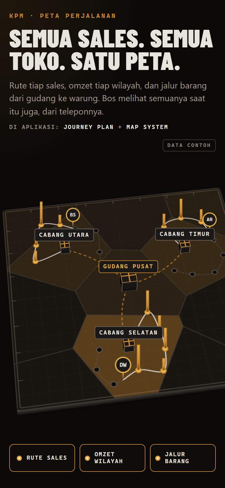
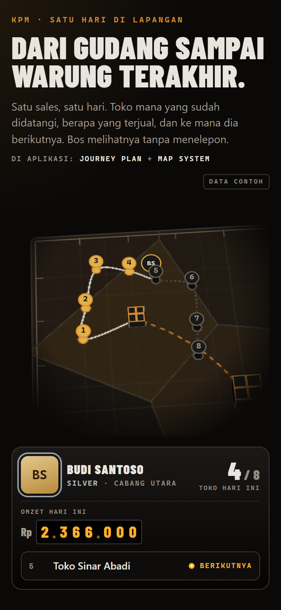
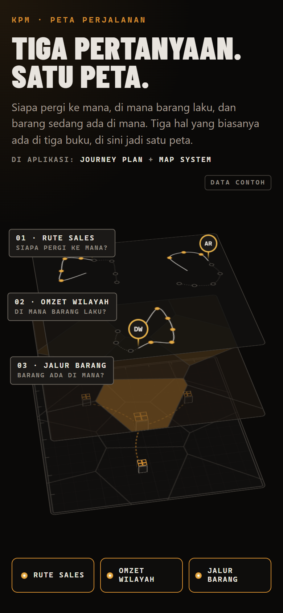

"Journey map" here = Journey Plan (each salesman's route and shops) shown together with the Map System (pins, money per area, goods lines). If you meant only one of them, say which.
Frames are frozen mid-day. That is also exactly what Lite Mode shows. On the live link the salesmen walk, the shops light up and the bars grow.
A · THE COMMAND TABLE MY PICK
All three salesmen, every shop and the goods lines on one tilted table. A gold bar rises on each shop a salesman has visited (taller = bought more). The boss sees "everything under control" in one look.

B · FOLLOW ONE SALESMAN
The camera rides with one salesman. His card counts the shops done and the money (the nixie tubes), and names the next shop. Best for the salesmen; the boss only sees one person.

C · THREE LAYERS
Routes, money per area and goods lines as three stacked plates that slowly close into one map. Explains the three things clearly, but each map is the smallest of the three looks on a phone.
